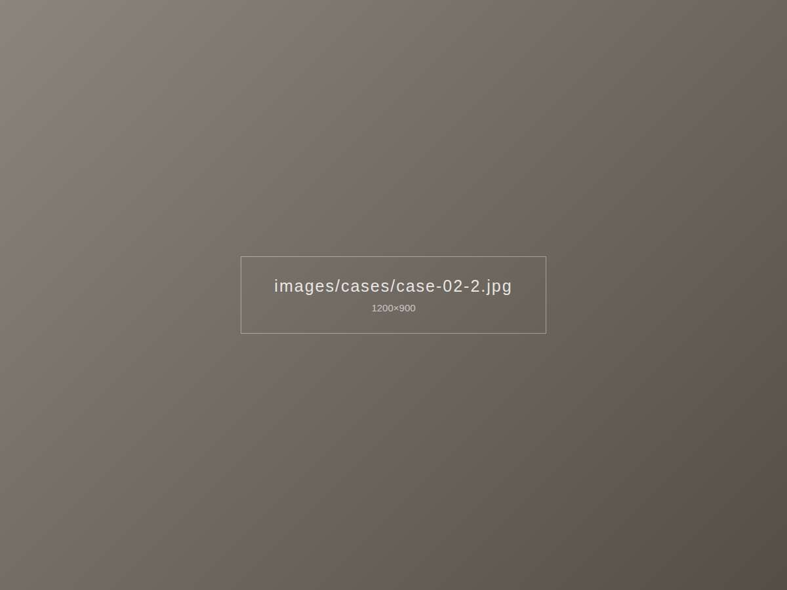
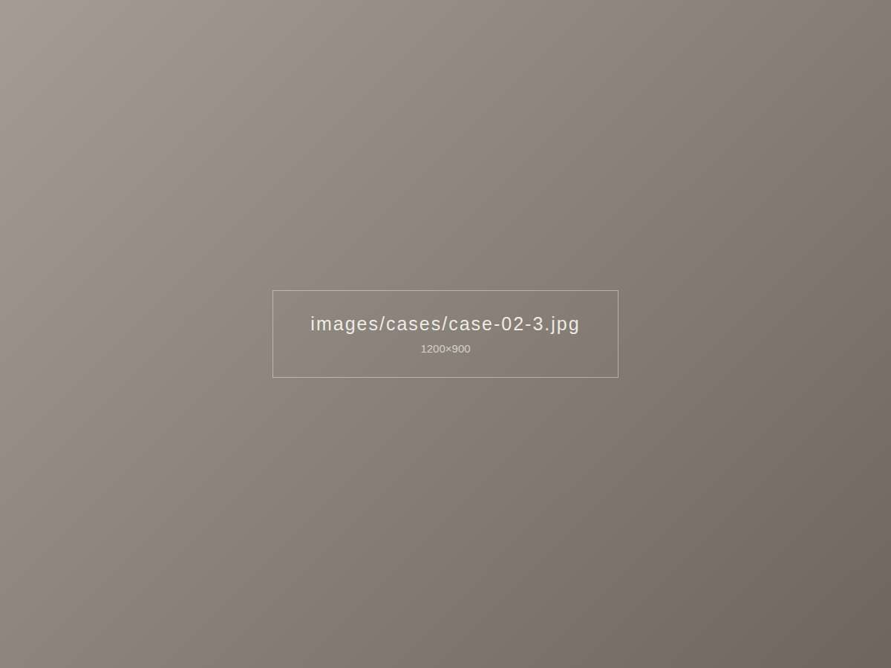

이런 고민이 있었어요
동향 안방이라 해가 일찍 들어와 새벽에 자주 깬다는 고민이었습니다. 기존 커튼은 위쪽과 옆으로 빛이 새어 들어오고 있었어요.



이렇게 해결했어요
차광 원단의 암막 커튼과 낮에 쓰는 쉬폰을 이중 레일로 시공했습니다. 빛이 새던 커튼박스 위쪽과 창 양옆을 넉넉히 덮도록 커튼 폭과 레일 길이를 창보다 넓게 잡았습니다.
시공 포인트
- 창 양옆으로 레일을 연장해 측면 빛샘 줄이기
- 바닥에 살짝 닿는 기장으로 아래쪽 빛샘 차단
- 낮에는 쉬폰만 쳐서 밝고 가볍게
비슷한 집이라면
경기 성남시 분당구 지역, 비슷한 구조의 집이라면 이 사례 사진을 보여주시며 상담받으셔도 좋아요.
암막 커튼 자세히 보기 · 분당 시공 안내